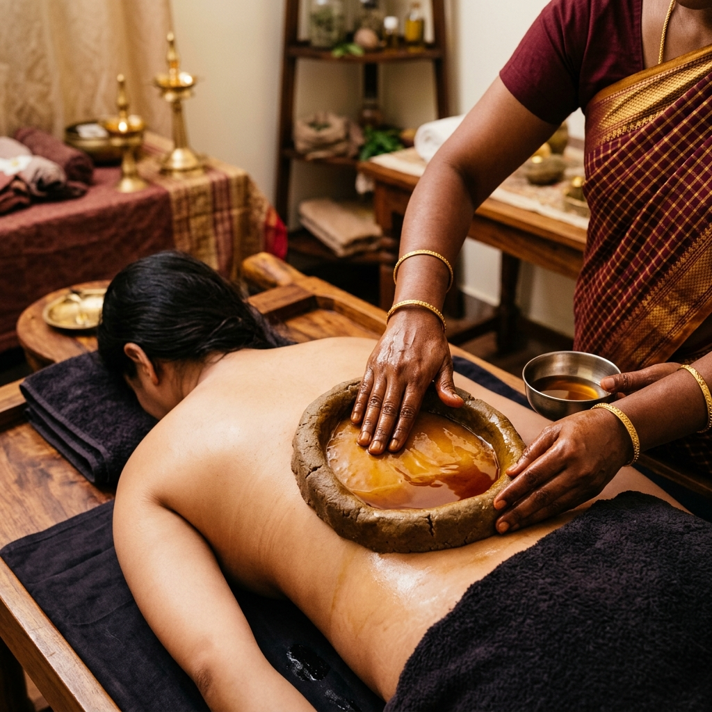

Pain Management
Ayurvedic Treatment for Disc Bulge and Back Pain: What Actually Helps?
A simple guide to how Ayurveda approaches L4-L5, L5-S1 disc bulge, sciatica and chronic back pain with diagnosis, Panchakarma and lifestyle correction.

The simple idea
Most people think a disc bulge means one thing: the disc is pressing on a nerve. That can be true, but pain is rarely that simple. Some people have a scan that looks worrying and very little pain. Others have severe pain with a smaller finding. The difference is often inflammation, muscle guarding, nerve sensitivity, sleep and how well the body is recovering. Ayurveda treats the person standing in front of the report, not only the report.
A 60-second way to read your back pain
- Pain moving below the knee usually needs nerve-focused assessment, not only muscle massage.
- Morning stiffness, night pain and sitting pain each point to different aggravating patterns.
- A scan finding is useful, but the treatment plan should also track strength, sensation and daily function.
- Red flags like bladder changes or progressive weakness need urgent medical care.
What Ayurveda looks for
An Ayurvedic doctor studies where the pain travels, whether it is sharp, dull, burning or pulling, what worsens it, and whether digestion, constipation, stress or irregular sleep are adding to Vata aggravation. In simple language, Vata is the movement principle. When it is disturbed, pain can become shifting, radiating, dry, stiff or unpredictable.

What treatment may include
Care may include internal medicines, local therapies such as Kati Basti, Abhyanga, Patra Pinda Sweda, gentle Panchakarma when appropriate, posture advice and diet changes that reduce inflammation and improve recovery. The goal is not to “push the disc back” with a single trick. The goal is to reduce irritation, calm the nerve, improve circulation and help the body regain stable movement.
Questions worth asking in consultation
- Is my pain mainly inflammatory, nerve-related, muscle guarding, or mixed?
- Which activities should I avoid for two weeks, and which movements are safe?
- How will we measure improvement beyond pain score?
When to seek urgent care
If there is loss of bladder or bowel control, progressive leg weakness, numbness in the saddle area, fever with back pain, or severe trauma, do not wait for routine treatment. Seek urgent medical care. Ayurveda can be supportive, but red flags need immediate assessment.
Related reading
Questions patients often ask
Can Ayurveda help avoid spine surgery?
In selected cases, yes. Many non-emergency disc and back pain cases improve with conservative care. Surgery decisions depend on neurological signs, severity and response to treatment.
Is Panchakarma always required for disc bulge?
No. Some patients need local therapies and medicines first. Panchakarma is chosen after assessment.
How long does back pain treatment take?
Acute pain may improve faster. Chronic or recurring pain usually needs a longer plan that includes strengthening habits, posture and digestion correction.
Need a doctor-led Ayurvedic opinion?
Bring your reports, symptom timeline and current medicines. A consultation helps connect the diagnosis with your digestion, sleep, stress and recovery pattern.
Book ConsultationUseful references
These links are included for readers and search systems that want broader context. They do not replace a doctor-led consultation.